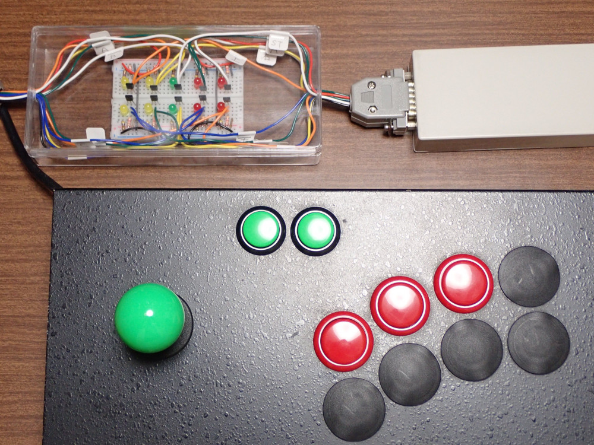

ゲームの入力遅延問題とその対策
ゲームの入力遅延とは、 ゲームパッド、ジョイスティック、キーボード、マウスなどのコントローラによる操作が、モニタに反映されるまでのタイムラグのことです。 近年、入力遅延は増大傾向で、ゲームプレイへの悪影響が指摘されています。 本文書では、 入力遅延の発生要因、ゲームプレイへの影響、測定方法、ゲーム作成者側に求められる配慮、ユーザー側で可能な対策 などをまとめます。この問題について、定まった呼称は存在しません。 「入力遅延」「操作遅延」「表示遅延」「Input lag」あるいは単に「ラグ」など様々です。 ここでは、 入力遅延 または単に 遅延 という言葉を使っていきます。
サウンド遅延・音声遅延については 別の記事 で触れます。
注）2009/10/29 時点の記事をもとに加筆修正し 2020年8月時点の状況を反映させた内容となっています。 遅延をめぐる状況は流動的です。現状と合致しない可能性があります。
遅延の発生源
- コントローラのレベルで生じる遅延
-
昨今の OS 環境では、コントローラ入力は瞬時にはゲームプログラムに伝えられません。
OS のドライバ層はコントローラ入力を定期的に読み取っています。
このような定期的な読み取りのことを「ポーリング」、
秒間読み取り回数を「ポーリングレート」と呼びます。
ゲームプログラムが取得できるコントローラ入力は、 ドライバ層が直近のポーリングで読み取った結果のコピーです。 そのため、ゲームプログラムに伝わるコントローラ入力は、 最大でポーリング間隔分の過去の状態であり、 入力遅延が発生します。
- ゲームプログラムのレベルで生じる遅延
-
ゲームプログラムがコントローラ入力を取得してから
グラフィクス描画処理を開始するまでに時間がかかる場合、
それだけ遅延が発生します。
- グラフィクスアクセラレータの描画処理で生じる遅延
-
ゲームプログラム同様、
グラフィクスアクセラレータの描画処理にも時間がかかり、
遅延発生の原因となります。
加えて近年グラフィクスのレンダリングパイプラインが複雑化しており、
それだけ遅延量も増大しています。
- モニタのレベルで生じる遅延
-
現在主流の液晶系モニタは、それ以前のブラウン管モニタに比べて大きな遅延があります。
加えて、ハイエンドのモニタでは、
画質向上のためモニタ内部で様々な解析や補正が行われるため、
大きな遅延が発生することがあります。
- OS/低レベル API 層で生じる遅延
-
ゲームプログラムからグラフィクスアクセラレータに発行された命令は即座には伝えられず、
OS/API 層で一旦中間コマンドとして蓄えられ、
冗長なステート変更の除去などの最適化プロセスを経たのち、
実際に送信されることがあります。
後続コマンドが確定するまで冒頭のコマンドを送信できない状況となるため、遅延の原因となります。
また、グラフィクスアクセラレータが生成した画像も、 即座にモニタに表示されず一旦 OS 層がバッファリングすることがあり、 遅延の原因となります。
遅延を体感してみよう
- 遅延体感 二重盲検テスト
-
「そもそも 1/60 秒単位の差なんて人間に知覚できるわけない」
と思われる方もいらっしゃるかもしれません。しかし、
「いや、体感できる」
と反証しようにも、どう証明したものかという問題があります。
そこで、人間が 1 フレーム単位の遅延を体感できるかどうかを 二重盲検法 により確認するプログラムを作成しました。
Download（for Windows 2021/02/24 更新）
プログラムを起動したら、まず始めに遅延量を選択してください。 続いて、遅延有り無しの 2 つのサンプルが与えられます。 space キーでサンプルを切り替えながら ジョイスティックもしくはカーソルキーで操作し、 遅延有りと感じる方のサンプルを enter キーで選択してください。 20 問解答すると的中率が表示されます。
的中率が 50% 付近だと、遅延が全く体感できていないことを意味します。 徐々に遅延量を少なくして、どのあたりの遅延数まで体感できるかを確認してみてください。
- 1/60 秒の遅延は確かに体感できる（但し個人差に左右される）
-
60fps 環境下の二重盲検テストの結果、
被験者の個人差、テスト環境の PC の差、等々により数字にブレはありますが、
概ね以下のような結果が得られました。
- 1 フレーム or 3 フレーム遅延 の識別は可能
- 1 フレーム or 2 フレーム遅延 の識別は可能な人不可能な人が分かれる
- 1 フレーム or 2 フレーム遅延 の識別で 100% 近い的中率を出す人も居る
「1/60 秒の遅延は確かに体感できる（但し個人差に左右される）。」
という結論が得られたことにして、話を進めます。
レトロゲームの復刻版をプレイすると操作感が違っている理由
昔やりこんだレトロゲームの復刻版をプレイすると、 プレイ感覚が違っていると感じることがあります。 昔ほどうまくプレイできないので、「年を取ってウデが鈍ったのかな？」
と思うことがあります。 しかし実際には、その原因は遅延にあるかも知れません。 昔のゲームハード（80年代）と現在のゲームハードで、 どのような違いが生じているのか比較してみます。
- 昔のゲームハード = 遅延が少ない
-
昔のゲームハードでは、
コントローラは回路で直結で、
入力値は即座にゲームプログラムに伝えられます。
ゲームプログラムが発行した描画リクエストは、
即座にスプライトレジスタに伝えられます。
スプライトはラスタ方式のため、
そのフレーム中に画面に表示されます。
モニタはブラウン管方式のため、
表示遅延はほぼゼロです。
- 現在のゲームハード = 遅延が大きい
-
現在のゲームハードでは、
コントローラ入力は OS 層がポーリング（定期的に監視）したものを API 越しで取得します。
ここでポーリング間隔に比例した遅延が発生します。
ゲームプログラムが発行した描画リクエストは、
フレームバッファの裏画面に描画されて、
次のフレームで実際に表示されます。
ここで 1 フレーム（またはそれ以上）の遅延が発生します。
モニタは液晶方式のため、
ここでも 1 フレーム程度の遅延が発生しています。
- 現在のゲームハードではプレイヤの最短応答時間が増大
-
人間が、
「視覚で認識 → 判断 → 操作」
の一連の動作にかかる最短応答時間は、およそ 0.20 秒です。
これは、複数の被験者に対して行われた実験の測定結果で、
ゲームのプレイスキルに関わらず、数字にはほとんど個人差がありません。
（追試したいところですが、ここでは 0.20 秒という数字を信用することにします。）
現在のゲームハードでは、 実測すると少ないケースでも合計 50 ミリ秒程度の遅延が発生しています。 50 ミリ秒の遅延は、 人間の最短応答時間（0.20 秒だと仮定）を、25% 悪化させる計算となります。
主な遅延発生源その１：OS のバッファリング
Windows 限定の話になりますが、 現在、遅延発生源の中でとくに目立つのが OS のバッファリングです。 大きい場合で安定して 4 フレーム程度の遅延が起きているという無法地帯です （2020年時点の、一般的なハイエンド GPU を搭載した PC 環境で観測）。- Windows Vista/7 で Desktop Window Manager が導入され遅延が劇的に増大
-
Windows Vista/7 で導入された Aero と呼ばれる機能があります。
この機能を利用するとき、Desktop Window Manager と呼ばれる仕組みの上でデスクトップの描画が行われ、
4 フレーム程度の遅延が起きるようになりました。
- Windows 10 以降、Desktop Window Manager を無効化できなくなった
-
Windows 7 までは、アプリケーションから Desktop Window Manager を無効にする方法が存在しましたが、
Window 10 以降は不可能になっているようで、
（後述するとおり、DirectX11 以前を利用する限り）
どうやっても 4 フレーム程度の遅延から逃れられない状況が発生していました。
この問題は長らく放置されていたのですが、 その後の Windows アップデートで DirectX12 の更新により、 従来のような低遅延フリップが可能な仕組みが提供されるようになりました。 しかし、なぜか DirectX11 以前の API からはこの低遅延フリップはどうやっても利用できないようです。 低遅延フリップしたいならば、DirectX11 ベースのコードを DirectX12 に移行しなければならないようです。
DirectX11 以前の API を利用するゲームで発生する遅延については、 DirectX API 経由ではなく、 GPU ベンダが別途提供する「低遅延化技術」で対処が行われています （凄い技術のようにアピールされていますが、 中で行われていることは、 DirectX12 向けの低遅延フリップ動作が DirectX11 API を利用するゲームでも発動するよう、 ドライバレベルで許可するだけの単純な処理であると考えられます）。
主な遅延発生源その２：液晶モニタの遅延
遅延発生源の中で、次に目立つのが液晶モニタで、1 フレーム程度の遅延が起きています。 （かつては 2 フレーム以上はザラに遅延していたのですが、2020年現在ゲーミングモニタなどでかなり改善されてきました。）- 液晶の欠点 = 応答速度が低い
-
液晶はもともと応答速度が低いという性質があります。
液晶モニタでは、
ピクセルがある色から別の色に移行するには結構な時間がかかります。
RGB 別に移行時間が異なることがあり、
残像が見えたり移行中に見えないはずの色が見えるなど、
様々な問題があります。
- 中間フレーム画像の生成を行うタイプの倍速 = 遅延が大きい
-
60fps の映像ソースから、120fps 240fps 等の映像を作り出す「倍速」と呼ばれる機能があります。
「ゲームの映像をスムーズにする」という売り文句でこの機能が紹介されている場合がありますが、
映像をスムーズにはしますが、遅延を増大させます。
倍速モードは概ね以下のようなアプローチで実現されています。
- 隣接するフレームの画像の動きを、動画圧縮アルゴリズムと似たブロックマッチングにより解析
- 解析結果に基づき、隣接するフレームを補間して表示
遅延を測定する方法
- 遅延測定方法の必要性 「測定されないものは改善されない」
-
現在のゲームハードに遅延があることがわかったとしても、
それが実際にどの程度なのかが問題です。
「測定されないものは改善されない」という言葉があります。 体感でしか認識できない遅延量を定量的に測定できる手段を確立することにより、 あいまいな議論を回避し、 改善に向けた考察が可能になります。 なによりまず必要なのは、確実な遅延測定方法です。
- 液晶モニタの遅延測定
-
Input Lag Tester
という装置があります。
これは、装置からモニタに映像を出力し、それを装置が装着しているカメラで認識し、
出力が実際に反映されるまでの遅延を計測するというものです。
OS 層のバッファリングを回避した純粋な計測結果が得られます。
- コントローラー入力から画面反映までの総遅延時間の測定
-
コントローラー入力から画面反映までの総遅延を計測したいケースでは、
簡単な電子工作が必要です。
ここでは一例を紹介します。 この例では、市販のゲームパッドを分解し、配線を乗っ取り、独自のジョイスティックに接続しています。 そして、ジョイスティックの操作に合わせて、LED（左上の透明ケース内）が点灯する仕組みになっています。 LED の点灯は、ソフトウェアを介さないので遅延がありません。 そして、ゲームを操作しながら、ゲーム画面と LED をハイフレームレート動画対応カメラ（240fps など）で撮影します。 撮影した動画をコマ送りで再生しながら、LED 点灯からゲーム画面反映までのフレーム数を計測します。

単に配線を乗っ取っただけでは、 ボタンを押したときに LED を光らせることができません。 これを解決するには、簡単な回路を自作する必要があります。 （写真では MOSFET を使っている）
ゲームプログラム側で可能な遅延対策
- Windows の場合
-
Windows 10 環境では、OS 層の介入による大きな遅延が発生します。
この問題を解消するには、
DirectX12 世代で拡張された仕組みを用いて、
最小遅延フリップを実装する必要があります。
詳しくは
こちらの記事
を参照してください。
- HSYNC フリップを利用する
-
HSYNC フリップは、最も低遅延なフリップ方法です。
ただし、副作用としてティアリングと呼ばれる画面の乱れが発生します。
詳しくは
こちらの記事
を参照してください。
- トリプルバッファリングを利用しない
-
トリプルバッファリングは、
CPU に VSYNC と非同期の処理を可能にしたり、
ゲームのフレームレートを安定化させる効果がある一方で、
表示遅延を増大させる副作用があります。
アクション性の高いゲームでは利用しない方が良いです。
詳しくは
こちらの記事
を参照してください。
- 遅延の少ないレンダリングパイプラインを組み立てる
-
より豪華な絵を出すため、
凝ったレンダリングパイプラインを組むのは悪いことではありませんが、
手法によっては遅延が増大するので注意が必要です。
プログラマが盲目的に技術を投入した結果、遅延が増大してしまい、
肝心のゲームプレイ体験の部分がスポイルされてしまう可能性があります。
技術を選択する際は、対象とするゲームがどのような性質のものなのかを考慮して、
よく吟味する必要があります（高度でありさえすれば良いというものではない）。
- 遅延の大きな環境を前提としたバランス調整を行う
-
プレイヤの環境によって遅延量が異なるので、
ギリギリの反射速度を問うようなゲームデザインは控えた方が良いです。
身も蓋も無いですが、残念ながらこれが現実です。
シューティングゲームなら、 高速な敵弾は抑え目にし、 弾幕密度で難易度調整するデザインが適しています。 アクションゲームなら、 エイミングなどのプレイヤ動作補正を積極的に導入して、 インタラクティブムービー仕上げにします。 ビートマニアのようなリズムゲームの場合は、 遅延のキャリブレーション機能をゲーム内コンフィグなどに用意する必要があります。
ゲームバランスの調整は遅延が大きめのモニタを基準に行います。 モニタの遅延は、 最大で 2 フレームぐらいを目安に考えた方が良いでしょう。
ユーザー側で可能な遅延対策
- モニタをゲームモードに設定する
-
ゲームモードを搭載しているモニタの場合、
これを有効にすることで遅延を少なくすることができます。
- モニタの解像度を適切に設定する
-
ゲーム画面（デスクトップ）の解像度と、
モニタの解像度が一致しない場合、モニタ内部で解像度変更処理が介在し、
遅延が増大することがあります。
モニタの解像度はドットバイドットになるように設定したほうが良いでしょう。
- その他
-
- モニタ選び
-
遅延の少ない液晶モニタ、もしくはブラウン管式のモニタを選択します。
液晶モニタの場合は、ゲームモードなどを搭載した機種を選びます。
遅延量の評価は、カタログスペックや口コミは信用せず、実測値で行います。
ベンチマークの総合サイトである RTINGS では、主要なモニタの遅延計測値が出ています。 感覚的な測定に頼らず実測値ベースで、 かつ異なる機種をフェアな条件で計測し、 比較できるようになっています。
- キーボード選び
-
パンタグラフ式などの、ストロークの浅いキーボードを選択します。
ポーリングレートの高い製品を選択します。
- マウス選び
-
ドライバを変更することで、ポーリングレートを向上させます。
もしくは、ポーリングレートの高い製品を選択します。
主に FPS プレイヤを対象とした、
ゲーミングマウス
と呼ばれるカテゴリの製品が多く販売されています。
- ジョイスティック選び
-
遊び（入力がニュートラルになる範囲）の少ないジョイスティックを選択します。
より少ない手の移動で入力を発生させるため、
軸が短いジョイスティックを選択します（シューティングゲーム用途なら、
セイミツ工業の
LS-32-01
がオススメ）。
既製品ではなかなか良いものが無いので、基本的に自作の世界になります。
PC ゲーム環境での遅延対策の難しさ
PC ゲーム環境での遅延対策はとても難しく、 以上を踏まえた上でもなお技術的課題があります。- ゲーム側の実装を変更し、最新の動向に追従していく必要がある
-
モニタ等のデバイスは年々進化していて、
遅延が解消される方向に動いています。
従って、新しいデバイスを買っていけば、基本的には遅延は改善されていきます。
しかし一方、OS やドライバ内部で生じる遅延については、 新しいものに更新するだけで簡単に恩恵をうけられるとは限りません。 ある世代で最善とされた低遅延化実装が、 将来にわたって最善な実装であることは保証されておらず、 新しい技術の恩恵を受けるには、 ゲーム側の実装を変更し追従していく必要があります。
- 新しい実装に置き換えて行かないと、遅延が悪化する可能性がある
-
仮に API のドキュメントに
「低遅延な動作をする」
という記述があったとしても、
それは「可能な限り努力する」という程度の意味でしかありません。
ある世代の OS 環境では低遅延な動作をしていたとしても、
OS の世代が変わった時に、そうではなくなる可能性があります。
実際、DirectX はこの辺りの割り切りにおいて容赦がありません。 古い世代の API の互換は、 アプリケーションがハングアップしない程度にはケアするけれど、 遅延特性まではいちいち考慮しないというスタンスのようです。 例えば、かつてバッファリング数を明示的に指定でき遅延削減効果のあった API が、 新しい DirectX 環境下では何の効果もないダミー実装に置き換えられていると言ったようなことが実際に起きています。
このことは、 「新しい実装に置き換えて行かないと、遅延が改善されない」 ではなく 「新しい実装に置き換えて行かないと、OS 更新等の外部要因で遅延が悪化する可能性がある」 ということを意味しています。
- 低遅延実装のトレンドを追うのは大変
-
低遅延実装のトレンドが変わる度に、ゲーム側の実装を修正するのは大変です。
低遅延処理を実現するためのわずか数個の簡単な API を呼びたいだけなのに、
下回りの DirectX の世代を完全に置き換える必要が生じてしまうなど、
非常に高い実装コストが要求される場合があります。
昨今ではゲームエンジンが普及し、 トレンドを追う退屈な作業はエンジン側に任せることが可能になってきました。 これは良い傾向です。 しかし実際にはその副作用として、 低レベル API ベンダがメンテナンスコスト削減のため世代を超えた細部の互換維持を放棄したり、 容赦のない仕様変更による分断が起きているとも感じます。 ゲームエンジンを利用しないゲームにとっては、 遅延問題は引き続き長期的な対処が難しい問題になっています。
2009/10/29 初出
2020/08/29 大幅リライト
2021/07/08 最終更新
文責： よっしん
[戻る]